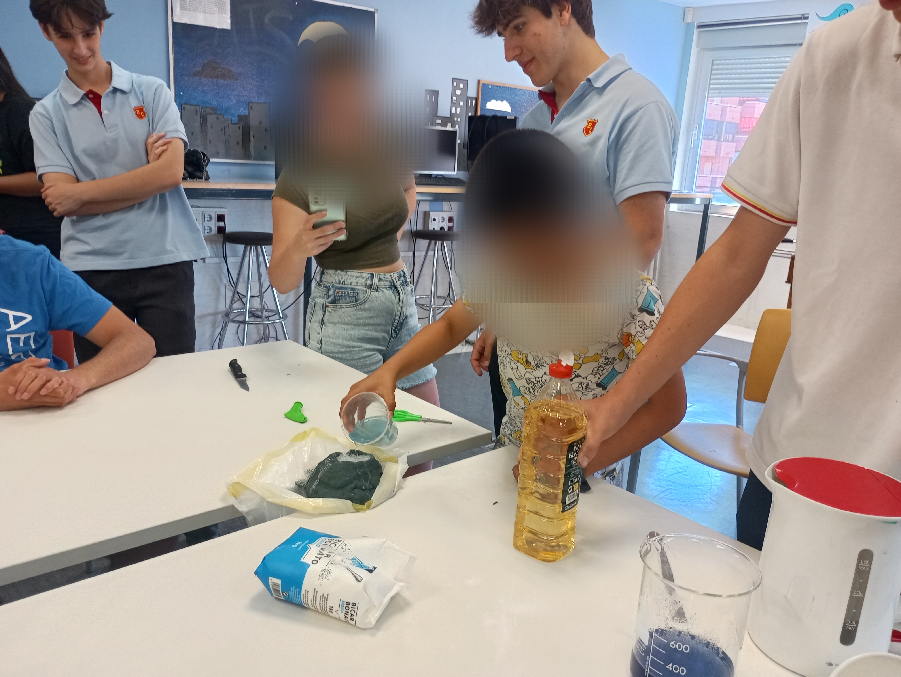

Runnymede STEM Club

The Runnymede STEM Club is an organisation founded and solely led by students in which we
share our scientific knowledge with younger children from many backgrounds in the
form of fun, challenging, and interactive experiments. Our goal has always been
to impart our passion for the sciences, especially physics, onto younger students, especially girls.
ABOUT US
The gender gap in higher-level STEM classes is still real and tangible today. In the most advanced maths
courses at our school, men dominate 13:1. In physics, this is 9:1. We founded the STEM club to foster enthusiasm
for science and technology equally in girls and boys, and believe the key to combating gender expectations
and limitations is to target younger students. In light of this, we carry out weekly practicals in school for 8- to
12-year-old students, allowing them to experience experimental science first-hand at earlier stages than would
otherwise be available. We also visit charities to do experiments with underprivileged teens, spreading a love
for science to disadvantaged communities. To sustain this effort, we train students to continue the club,
teaching them to give back to their community and inspire progress.
EXPERIMENTS
Join Us
Google Classroom Code:
pdwlxuy